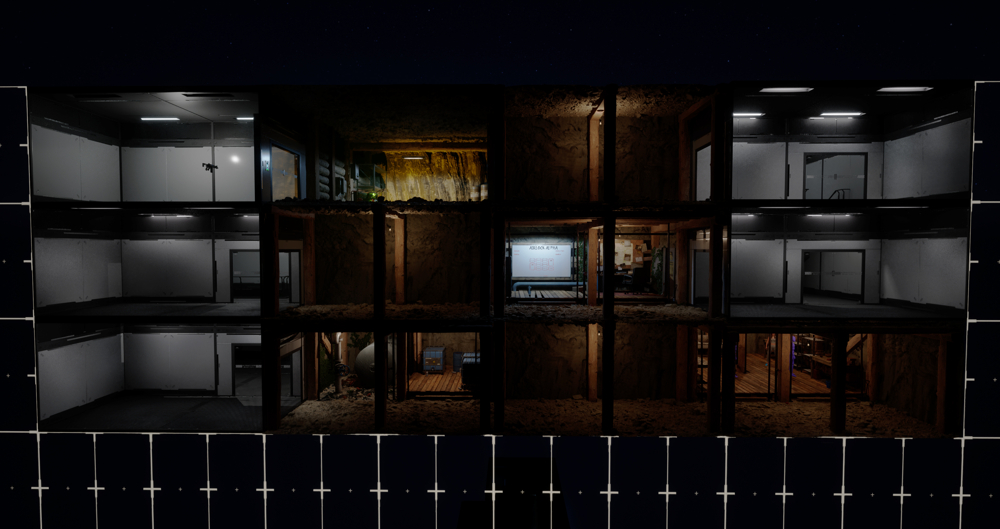
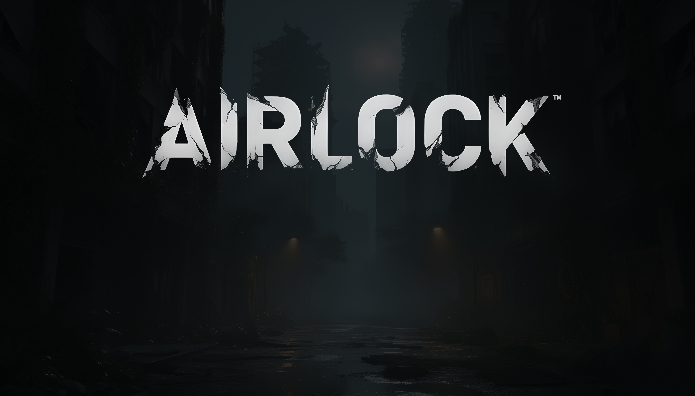

The C++ backbone. Grid system, modules, AI, HUD, combat, mining, skills, MetaHumans, the Marv companion. Every system the game depends on.
CLEAR
03.01
Grid System
GridManager in C++ from scratch. World-to-grid coordinate conversion, cell states, multi-floor support. The system everything else builds on top of.

GridManager from blank file. Multi-floor support designed in from day one. World-to-grid coordinate conversion. Cell occupancy tracking. The bedrock everything else stands on.
READ MORE
CLEAR
03.02
Character
ALS taken apart and rebuilt for AIRLOCK. Custom movement feel, camera behaviour, transitions between underground and surface. One controller, two very different feels.
ALS V4 dismantled and rewired for AIRLOCK. Custom rotation modes. Stance changes. Crouch flow. The character feels heavy underground and alert above. Two worlds, one pawn.
// EXPANDED FILE
CLEAR
03.03
UI System
Full main menu system from scratch. Epilepsy warning, brightness calibration, press-any-key splash, all sub-screens and settings.

Main menu shell, settings, accessibility, brightness calibration, epilepsy warning, press-any-key splash. Every screen on the path from boot to gameplay built from the painted style guide.
READ MORE
CLEAR
03.04
HUD System
In-game HUD: health, stamina, compass, status effects, notifications. Full inventory system, equip, fire, swap, drop, pick up. Items degrade.
Compass, vitals, status effects, notifications, weapon ammo, day-time clock, modular sub-widgets feeding off a single HUD State Component. Add a new screen, it just plugs in. No legacy spaghetti.
// EXPANDED FILE
CLEAR
03.05
Combat
Weapons you can equip, fire, and feel. Ranged + melee. Every weapon degrades. Ammunition is scarce. Combat designed to feel desperate, not heroic.

Weapons that degrade. Ammo that runs out. M4 Carbine, Glock, the demo loadout. Every shot is a trade. Combat designed to feel desperate, not heroic.
READ MORE
CLEAR
03.06
Module System
Module system fully integrated. 14+ categories. Place, move, remove. Architecture mid-development transition from Blueprints to Level Instance modules, the speed-of-authoring unlock.

Ghost placement, snap-to-grid, collision check, neighbour-aware wall toggling, save/load round-trip. Then the big architectural pivot mid-flight: monolithic Blueprints out, Level Instance modules in. Speed of authoring x10.
READ MORE
CLEAR
03.07
Horde System
Optimised horde, large numbers of The Altered without tanking performance. Spawn, detection, navigation, swarming. They hunt. They overwhelm. Daytime tense. Night deadly.

Days-Gone-style horde architecture. Hundreds of Altered chasing one player without tanking the framerate. Spawn manager, perception, navigation. They hunt. They overwhelm. Daytime tense, night deadly.
READ MORE
CLEAR
03.08
Loot
Lootable items scattered through ruined buildings. Food, weapons, medicine, blueprints, raw materials. Every surface trip is a risk-reward calculation.
Cabinets. Drawers. Lockers. Every container a hand-stocked moment of risk-reward. Food, weapons, blueprints, raw materials. The reason every surface trip means something.
// EXPANDED FILE
CLEAR
03.09
MetaHuman
ALS mannequin replaced with a fully assembled MetaHuman. Realistic face, hair, skin, expressions. The foundation for cutscenes and characters you care about.

ALS mannequin retired. MetaHuman in. Real face, real hair, real subsurface scattering. The foundation for every cutscene moment that has to land emotionally, not just animations playing on a doll.
READ MORE
CLEAR
03.10
Marv (Companion)
Marv follows you. Engages enemies. Sniffs out hidden loot. Reacts to danger. Sit system, full locomotion, pose rules. Personality. Moods. Memory.

Marv has moods. He sniffs. He sits. He chases. He has poses that lock when the player moves. He's not a turret on legs, he's a dog you start to worry about.
READ MORE
CLEAR
03.11
Tier System
Five visual and functional tiers per module: Cave, Structured Cave, Brick + Wood, Concrete + Tile, Metal Sci-fi. Each upgrade visible and earned.
Cave → Structured Cave → Brick + Wood → Concrete + Tile → Metal Sci-Fi. Every upgrade re-skins a module visually and functionally. You see the progress when you walk past it.
// EXPANDED FILE
CLEAR
03.12
Mining & Interact
Universal Press-to-Interact framework. Doors, loot, NPCs, ore nodes, terminals. Platform-aware icons (KB / Xbox / PlayStation). Mining loop integrates with grid depth, deeper = rarer ores.
One framework for every interactable in the game. Press, hold, contextual prompt, platform-aware glyph (KB/Xbox/PS). Mining ties into grid depth, deeper rooms surface rarer ore.
// EXPANDED FILE
CLEAR
03.13
Skill System
Shared skill tree between player and Settlers. 17 parent categories, 130+ sub-skills, 8 tiers × 10 sub-levels. Pistols, cooking, brewing, husbandry, alchemy, fishing, tailoring, medical, more.
Seventeen parent skill categories. A hundred and thirty plus sub-skills. Eight tiers, ten sub-levels each. Player and Settlers share the tree. XP propagates across related skills. Built for hundreds of hours of progression.
// EXPANDED FILE